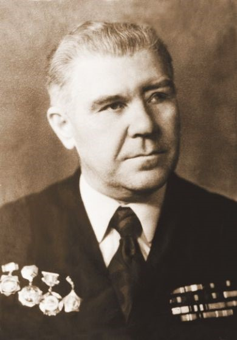

28 января 1943 года
Источник: Волгоградская правда от 25 января 1983 года.
ОТ СОВЕТСКОГО ИНФОРМБЮРО
Утреннее сообщение 28 января.
28 января. Войска Донского фронта продолжали истреблять разрозненные группы противника. Ближе к центральной части Сталинграда немцы оказывали огневое сопротивление. С каждым часом возрастает количество сдавшихся в плен. Сдались в плен еще один генерал, три полковника и другие старшие офицеры. Севернее Сталинграда советские части теснили противника и истребляли его живую силу. Захвачены большие трофеи, среди которых 46 танков. 214 орудий, 583 пулемета, 5890 автомашин, бронепоезд.
Вечернее сообщение 28 января.
Севернее Сталинграда три пленных немца, отпущенные обратно в свою часть, вскоре вернулись и привели с собой еще 70 солдат и офицеров, решивших сложить оружие. Наши подразделения захватили 97, более 100 автомашин.
Источник: Волгоградская правда от 28 января 1983 года.
Событие. Направление удара – штаб Ф. Паулюса
Федор Михайлович Ильченко попал в 38-ю отдельную мотострелковую бригаду. Ту самую, что в 1942 году формировалась в Тракторозаводском районе, а потом стойко оборонялась и на юге, и в центре города. Однако пришел срок – осталась в бригаде горстка людей. Отправили их за Волгу опять на формирование. И опять повезло. В ночь на 7 ноября 1942 года переправились через Волгу, заняли позиции между озерами Сарпа и Барманцак. Отсюда и пошли 20 ноября в наступление.

Славный путь у бригады, но больше всего она известна тем, что пленила штаб Ф. Паулюса. А к этому Федор Михайлович имеет самое непосредственное отношение.
К ночи 28 января подразделения бригады, сломив сопротивление врага, вышли на левый северный берег реки Царицы. Перед бригадой командующий 64-й армией генерал М. Шумилов поставил задачу: наступать вдоль улицы Коммунистической к вокзалу и взять его.
Старший лейтенант Ильченко, заместитель начальника по оперативной части, был в боевых порядках батальонов, организуя их действия.
Каждый боец понимал тогда - Сталинградская битва подходит к концу. И с часу на час жди с поднятыми руками не только немецких солдат, но и тех, кто направлял их, - генералов.
Каждой части, конечно, хотелось взять в плен штаб Ф. Паулюса. Но где он? Одни говорили – в здании тюрьмы, другие – в драматическом театре. Точно никто не знал. Наверное, поэтому несколько раз за день сверху запрашивали: «Где Паулюс, что известно о штабе 6-й армии». А тут еще пленный фашистский майор сообщил Ильченко, что Паулюса в городе нет, улетел в Германию.
«Ну пусть же не Паулюс, кто-то другой должен руководить войсками», - рассуждал Ф.М. Ильченко. Боевой опыт подсказывал – вражеский штаб где-то близко. Уж слишком плотен огонь на левом фланге бригады, вдоль улиц Краснознаменской, Сурской, Ломоносова.
Среди пленных гитлеровцев оказался офицер, неплохо владеющий русским языком. По правилам, его надо было направить в тыл. Но бывают случаи, когда лучше поступить против правил. Ильченко решил оставить пленного у себя. Прикрепил к нему даже своего ординарца, приказал пуще глаза беречь.
В меняющейся кутерьме этажей, домов, подвалов быстро получить информацию от противника было очень важно. Цель – узнать, где находится штаб Паулюса.